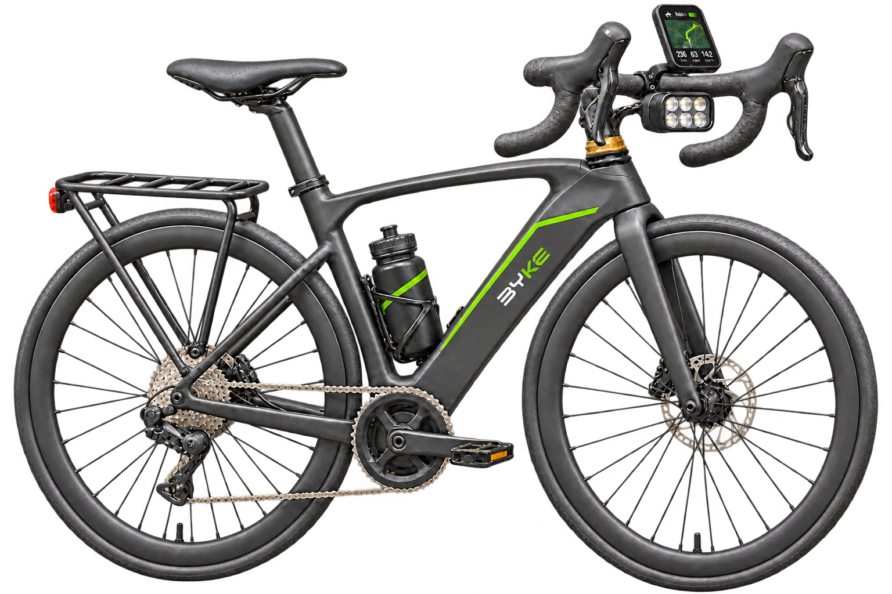
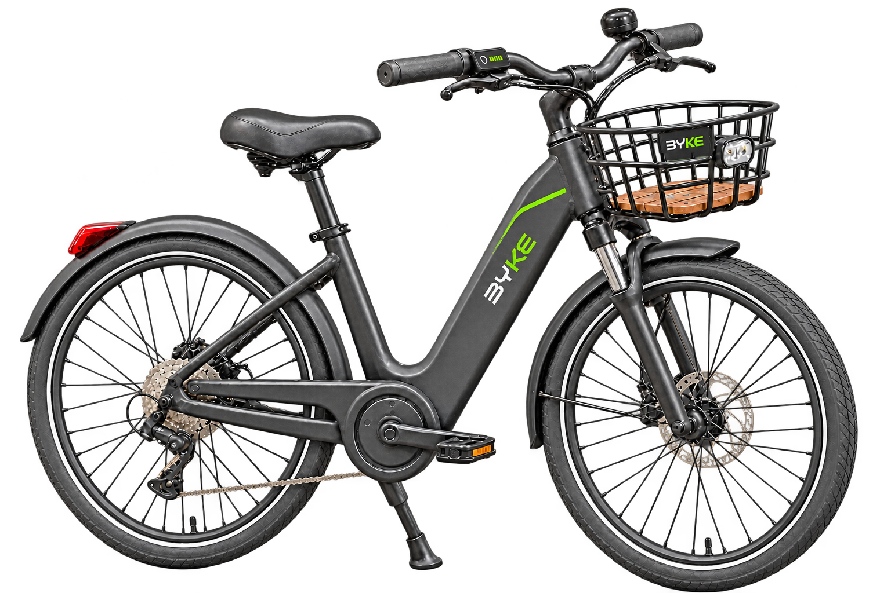
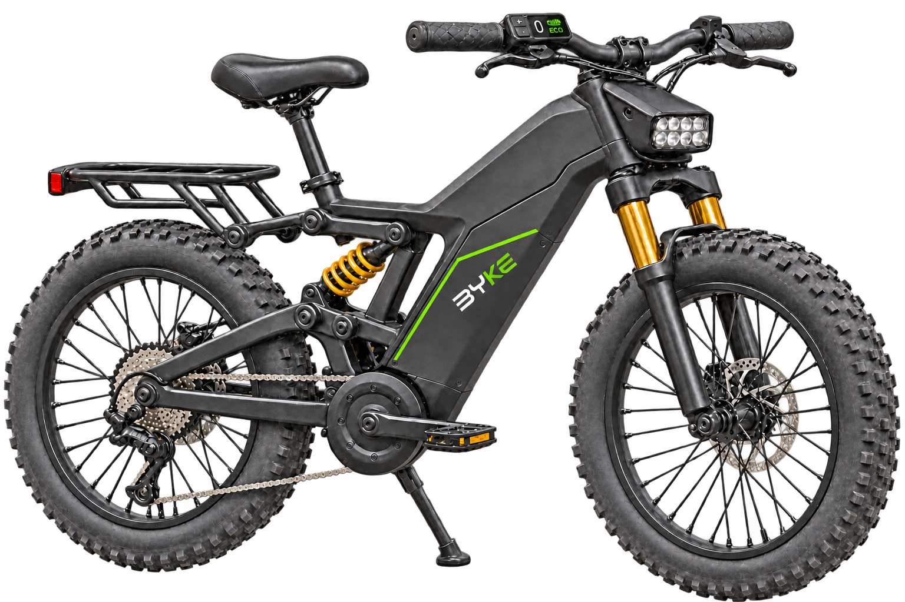

BICICLETAS ELÉTRICAS
Marlin. Tuna. Whale.
Compare as características de Marlin, Tuna e Whale e escolha o modelo para sua rotina.
5 perguntas · cerca de 1 minuto

Passe o cursor pela bike para trocar. Mova para explorar.
ESPORTIVA
Marlin
Guidão curvo e pneus de perfil liso para trajetos no asfalto. Inclui bagageiro traseiro e suporte para garrafa.
- Autonomia estimada
- Até 100 km por carga
- Recarga completa estimada
- 4–5 horas
- Pneu e aro propostos
- 700 × 40C · aro 700C

URBANA
Tuna
Quadro baixo, cesta dianteira e bagageiro traseiro para os deslocamentos do dia a dia.
- Autonomia estimada
- Até 100 km por carga
- Recarga completa estimada
- 4–6 horas
- Pneu e aro propostos
- 27,5 × 2,15″ · aro 27,5″

CROSS
Whale
Pneus largos e suspensão dianteira e traseira para percursos urbanos com calçamento irregular e variações de piso.
- Autonomia estimada
- Até 60 km por carga
- Recarga completa estimada
- 5–7 horas
- Pneu e aro propostos
- 26 × 4,0″ · aro 26″
UMA ESCOLHA COM A SUA CARA
Qual delas é a sua BYKE?
Conte como você pedala. Compare os três modelos a partir do seu perfil.
LADO A LADO
Compare os modelos.
| Ficha técnica | MarlinEsportiva | TunaUrbana | WhaleCross |
|---|---|---|---|
| Autonomia Estimada por carga | Até 100 km | Até 100 km | Até 60 km |
| Recarga Completa, estimada | 4–5 h | 4–6 h | 5–7 h |
| Pneus e aros | 700 × 40CAro 700C · perfil liso | 27,5 × 2,15″Aro 27,5″ · uso urbano | 26 × 4,0″Aro 26″ · cravos para pisos irregulares |
| Controle e conforto | Guidão curvoPegadas variadas durante o pedal | Quadro baixoFacilita subir e descer | Suspensão duplaDianteira e traseira |
| Acessórios | GPSSuporte para garrafa | Cesta dianteiraPara compras e objetos do dia a dia | Bagageiro traseiroPara levar objetos no dia a dia |
As medidas dos pneus e aros são propostas para o protótipo.
JÁ ENCONTROU SUA BYKE?
Conheça os planos.
Veja como funciona a assinatura e descubra as modalidades disponíveis.